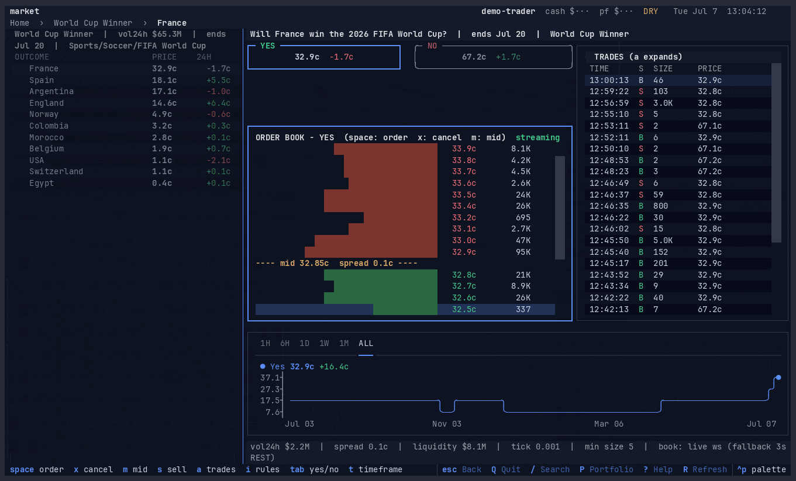
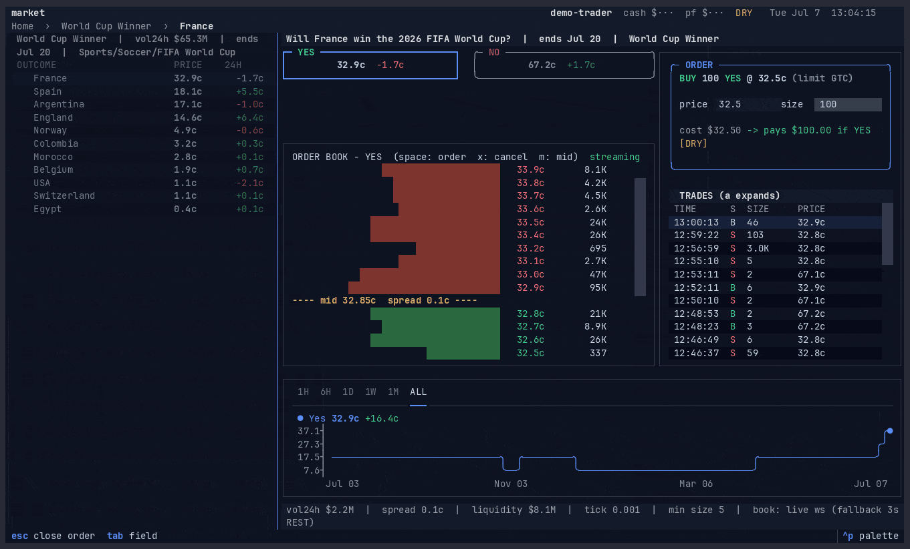
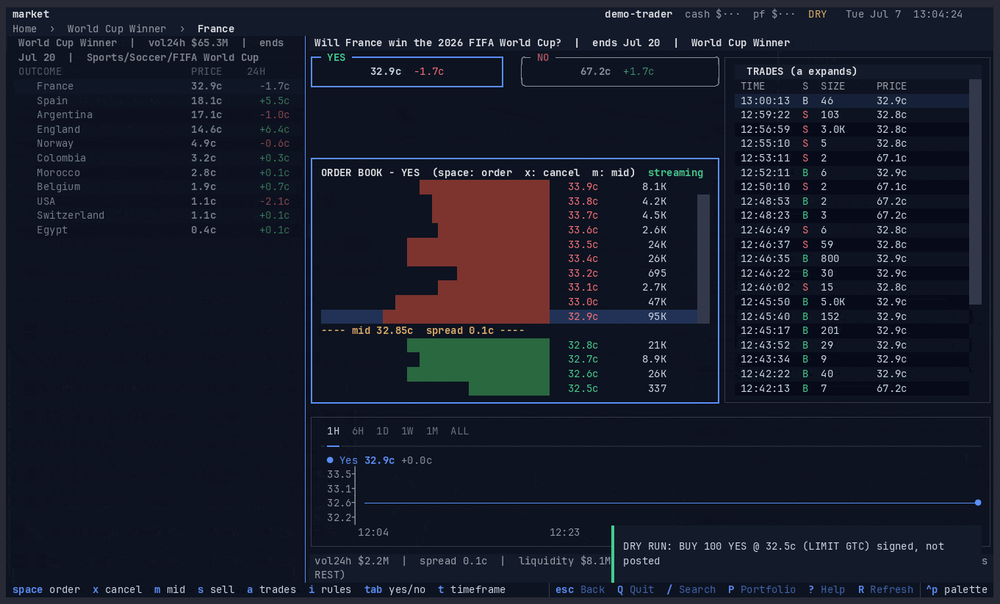

~ $
Browse, chart, trade. All keyboard, no browser.
Live order books, straight from the CLOB.

Orders in cents, under the live book.
Dry-run by default: signed, never posted.


>_ polymarket-tui
$
polymarket-tui.botsmith.dev